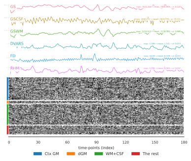
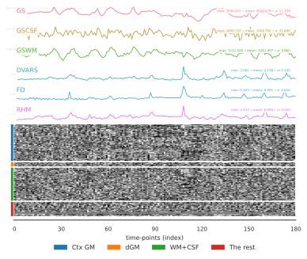

Cortical surface anatomical parcellations.
The cortical parcellations were generated based on the cortical surface registration of SUGAR. Parcellations are shown on the white (upper row) and pial surfaces (lower row).

This panel shows skull-stripped brain and cortical/subcortical segmentation of the T1w image.
The white surface (blue contours) and pial surface (red contours) were reconstructed with FastCSR and are overlaied on the native T1w image.
The cortical parcellations were generated based on the cortical surface registration of SUGAR. Parcellations are shown on the white (upper row) and pial surfaces (lower row).
SynthMorph was used to perform nonlinear registration between the T1w reference and the template space. Hover on the panels with the mouse pointer to transition between both native T1w and template spaces. Spatial normalization of the T1w image to the MNI152NLin6Asym template.
Hover on the panel with the cursor allows for the observation of field inhomogeneity intensity measured in Hertz, using the "magnitude map" for anatomical reference. The inhomogeneities of the B0 field cause spatial distortions in the phase-encoding direction of the image.
bbregister (boundary-based registration, BBR) - 6 dofResults of performing susceptibility distortion correction (SDC) on the EPI-BOLD image.
bbregister was used to generate transformations from EPI-BOLD space to T1w-space.
Functional MRI was resampled to the MNI152NLin6Asym template space based on bbregister, SUGAR and SynthMorph.
The temporal SNR map was estimated by the TSNR from nipype.
Summary statistics are plotted, which may reveal trends or artifacts in the BOLD data. Global signals (GS) were calculated within the whole-brain, and the white-matter (GSWM) and the cerebro-spinal fluid (GSCSF) were calculated with their corresponding masks. The standardized DVARS, framewise-displacement measures (FD), and relative head motion (RHM) were calculated. A carpet plot shows time series for all voxels within the brain mask, including cortical gray matter (Ctx GM), deep (subcortical) gray matter (dGM), white-matter and CSF (WM+CSF), and the rest of the brain (The rest).
bbregister (boundary-based registration, BBR) - 6 dofResults of performing susceptibility distortion correction (SDC) on the EPI-BOLD image.
bbregister was used to generate transformations from EPI-BOLD space to T1w-space.
Functional MRI was resampled to the MNI152NLin6Asym template space based on bbregister, SUGAR and SynthMorph.
The temporal SNR map was estimated by the TSNR from nipype.
Summary statistics are plotted, which may reveal trends or artifacts in the BOLD data. Global signals (GS) were calculated within the whole-brain, and the white-matter (GSWM) and the cerebro-spinal fluid (GSCSF) were calculated with their corresponding masks. The standardized DVARS, framewise-displacement measures (FD), and relative head motion (RHM) were calculated. A carpet plot shows time series for all voxels within the brain mask, including cortical gray matter (Ctx GM), deep (subcortical) gray matter (dGM), white-matter and CSF (WM+CSF), and the rest of the brain (The rest).
nextflow run /opt/DeepPrep/deepprep/nextflow/deepprep.nf -c /mnt/ngshare/temp/DP_process_app/test_sdc/ds004192_out/WorkDir/nextflow/run.config -w /mnt/ngshare/temp/DP_process_app/test_sdc/ds004192_out/WorkDir/nextflow -with-report /mnt/ngshare/temp/DP_process_app/test_sdc/ds004192_out/QC/report.html -with-timeline /mnt/ngshare/temp/DP_process_app/test_sdc/ds004192_out/QC/timeline.html --bids_dir /mnt/ngshare/temp/DP_process_app/test_sdc/ds004192 --output_dir /mnt/ngshare/temp/DP_process_app/test_sdc/ds004192_out --bold_task_type 6cat --fs_license_file /mnt/ngshare/license.txtWe kindly ask to report results preprocessed with this tool using the following boilerplate.
# Contributing to *DeepPrep* Welcome to the *DeepPrep* repository! We're excited you're here and want to contribute.
No errors to report!